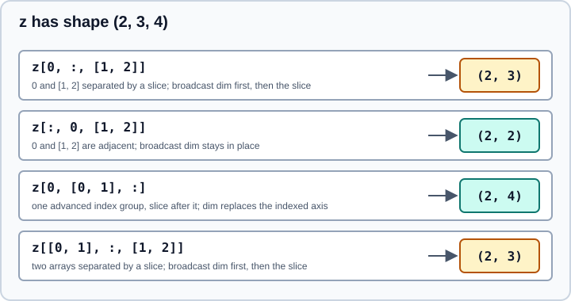

Advanced and Boolean Indexing
|
This content was generated with the assistance of AI and should be verified against the official documentation before being relied on in production. |
This page was checked in October 2026 against NumPy 2.5 (2.5.4 is the latest patch release). Examples target Python 3.13 or 3.14 and were run on Python 3.13. Every example below was run with NumPy 2.5.4. Advanced indexing is triggered when the index contains an integer array, a list, or a boolean array (a mask). Unlike basic indexing, which returns a view, advanced indexing always returns a copy. It is the tool for selecting arbitrary elements, filtering by condition and reordering, and it has several rules that surprise newcomers: how multiple index arrays combine, where the new dimensions land, and why augmented assignment with repeated indices does not accumulate.
If you have not read it yet, start with Basic Indexing and Slicing. The examples use this array:
import numpy as np
a = np.arange(12).reshape(3, 4) * 10
print(a)[[ 0 10 20 30] [ 40 50 60 70] [ 80 90 100 110]]
Integer-array indexing
An integer array (or list) along one axis picks those positions in the given order, with repetition allowed. Negative values count from the end.
print(a[[0, 2]]) # rows 0 and 2
print(a[:, [3, 0]]) # columns 3 then 0
print(a[np.array([-1, -3])])[[ 0 10 20 30] [ 80 90 100 110]] [[ 30 0] [ 70 40] [110 80]] [[ 80 90 100 110] [ 0 10 20 30]]
An index out of range raises IndexError (index 5 is out of bounds for axis 0 with size 3). An empty index array is valid and returns an empty selection, a[[]] having shape (0, 4).
When several axes are indexed with arrays, the arrays are broadcast together and elements are picked pairwise, not as a grid:
print(a[[0, 2], [1, 3]]) # elements (0, 1) and (2, 3)
r = np.array([[0], [2]]) # shape (2, 1)
c = np.array([1, 3]) # shape (2,)
print(a[r, c]) # broadcast to (2, 2): a grid of 4 elements
print(a[np.ix_([0, 2], [1, 3])]) # same grid, built by np.ix_[ 10 110] [[ 10 30] [ 90 110]] [[ 10 30] [ 90 110]]
np.ix_ builds the open mesh of index arrays for you. Use it whenever you want the sub-matrix at the intersection of chosen rows and columns, which is a very common mistake to write as a[[0, 2], [1, 3]] (two elements, not four). The broadcasting rules are those of Broadcasting; index arrays that cannot be broadcast raise IndexError with a message naming the shapes.
Boolean (mask) indexing
A boolean array of the same shape as the indexed region selects the elements where it is True. The result is always 1-D, in C order, because the number of selected elements per row is irregular.
m = a > 50
print(m)
print(a[m], a[m].ndim)
print(a[(a > 20) & (a < 80)])
print(a[~(a % 20 == 0)])[[False False False False] [False False True True] [ True True True True]] [ 60 70 80 90 100 110] 1 [30 40 50 60 70] [ 10 30 50 70 90 110]
Combine conditions with the bitwise operators &, |, ~ and ^, and always parenthesise each comparison; Python’s and, or and not do not work element-wise and raise ValueError: The truth value of an array ... is ambiguous. A boolean array may also be shorter than the array and index a single axis. It must then match that axis length exactly:
print(a[[True, False, True], 1]) # rows 0 and 2, column 1
print(a[a.sum(axis=1) > 100]) # rows whose sum exceeds 100
try:
a[np.array([True, False])]
except IndexError as e:
print("IndexError:", e)[10 90] [[ 40 50 60 70] [ 80 90 100 110]] IndexError: boolean index did not match indexed array along axis 0; size of axis is 3 but size of corresponding boolean axis is 2
Boolean indexing is equivalent to integer indexing with the positions returned by np.nonzero. These functions are the explicit forms:
print(np.nonzero(a > 90)) # tuple of index arrays, one per axis
print(np.flatnonzero(a > 90)) # indices into the flattened array
print(np.where(a > 50, a, -1)[0]) # three-argument where: choose per element(array([2, 2]), array([2, 3])) [10 11] [-1 -1 -1 -1]
np.where(cond, x, y) never changes the shape and is the right tool for "this value or that value", while np.where(cond) with one argument is np.nonzero. Missing-value cleaning is a typical use of masks:
q = np.array([1., np.nan, 3.])
q[np.isnan(q)] = 0
print(q)[1. 0. 3.]
For computations that should skip masked entries rather than copy them out, see Masked Arrays.
Mixing arrays with slices and integers
You can mix advanced and basic indices in one expression. The rule that confuses people is where the dimension created by the advanced indices goes in the result:
-
If all advanced indices (arrays, and integers, which count as advanced when an array is present) are adjacent, the broadcast dimension replaces them in place.
-
If they are separated by a slice,
Ellipsisornp.newaxis, the broadcast dimension is moved to the front, followed by the sliced dimensions.
z = np.arange(24).reshape(2, 3, 4)
print(z[:, 0, [1, 2]].shape) # adjacent: (2, 2)
print(z[0, :, [1, 2]].shape) # separated by a slice: (2, 3)
print(z[0, [0, 1], :].shape) # (2, 4)
print(z[[0, 1], :, [1, 2]].shape) # (2, 3)(2, 2) (2, 3) (2, 4) (2, 3)

In z[0, :, [1, 2]] the integer 0 and the list [1, 2] are separated by a slice, so the result is (2, 3): first the length-2 advanced dimension, then the length-3 slice dimension. A transposed result compared with what you expected is the usual symptom. When in doubt, check .shape or index in two steps, applying the basic slice first (z[0][:, [1, 2]] gives (3, 2)).
Assignment
Advanced indexing on the left of = writes into the original array, and the right-hand side is broadcast to the selection. A mask assignment is the idiomatic way to clip or replace values:
b = a.copy()
b[b > 50] = 0
print(b)
b[[0, 2]] = -1 # whole rows
print(b)[[ 0 10 20 30] [40 50 0 0] [ 0 0 0 0]] [[-1 -1 -1 -1] [40 50 0 0] [-1 -1 -1 -1]]
Reading with advanced indexing produces a copy, so a chained expression such as b[b < 0][0] = 5 assigns into a temporary and has no effect on b. Use one indexing step on the left-hand side: b[b < 0] = 5. The same applies to b[[0, 2]][0] = 5 and to any mixture of a mask followed by another index.
Repeated indices and np.add.at
If the same position appears several times in an assignment index, only the last value is kept. For augmented assignment this means the operation is applied once per distinct position, not once per occurrence:
x = np.arange(4)
x[[0, 0, 1]] += 1
print(x)[1 2 2 3]
Position 0 appears twice but was incremented only once. The unbuffered ufunc method ufunc.at applies the operation once per occurrence:
y = np.zeros(4, dtype=int)
np.add.at(y, [0, 0, 1, 3, 3, 3], 1)
print(y)
print(np.bincount([0, 0, 1, 3, 3, 3], minlength=4))[2 1 0 3] [2 1 0 3]
np.add.at is correct but can be slow; for counting, np.bincount (optionally with weights=) is usually much faster, and pandas groupby covers the general case. A ufunc’s where= argument without an out= array leaves the unselected elements uninitialised, so do not use it as a substitute for masking assignments.
Source: NumPy reference: numpy.ufunc.at
Helper functions
Several functions express common advanced-indexing patterns more clearly.
print(np.take(a, [0, 5, 11])) # flat positions by default
order = np.argsort(-a, axis=1)[:, :2] # top-2 columns per row
print(np.take_along_axis(a, order, axis=1))
idx = a.argmax(axis=1)
print(a[np.arange(3), idx]) # row maxima by hand
w = a.copy()
np.put(w, [0, 1], [-1, -2])
print(w[0])
print(np.compress([True, False, True], a, axis=0).shape)[ 0 50 110] [[ 30 20] [ 70 60] [110 100]] [ 30 70 110] [-1 -2 20 30] (2, 4)
-
np.take(a, idx, axis=...)is advanced indexing along one axis, withmode=controlling out-of-range behaviour (raise,wrap,clip). -
np.take_along_axisandnp.put_along_axispair an index array of the same ndim with the array, which is how you apply the output ofargsortorargmax(keepdims=True)correctly. -
np.compressandnp.extractare the function forms of boolean selection. -
np.select,np.chooseandnp.wherechoose between several arrays elementwise without changing shape.
Copies, memory and performance
Advanced indexing allocates a new array, so selecting a large part of a big array uses memory proportional to the selection. A sorted, regular selection can often be replaced by a slice (a view with no copy). Boolean masks are one byte per element, so keep them if you reuse the condition. Advanced-index results do not share memory with the source:
v = a[[0, 1]]
print(np.shares_memory(a, v))False
See Copies and Views for the full list of operations that copy.
Common pitfalls
-
a[[0, 2], [1, 3]]is not a block. It picks two elements. Usea[np.ix_(rows, cols)]for the grid. -
Using
and/oron arrays. Use&,|,~with parentheses. -
Chained assignment.
a[mask][0] = 1writes into a copy. Usea[mask] = ...or compute integer positions withnp.flatnonzerofirst. -
Repeated indices with augmented assignment. Use
np.add.atornp.bincount. -
Mask length mismatch. A mask must match the axis length exactly; slicing the array to the mask length is not done for you.
-
Assuming the result keeps the dimension order. Separated advanced indices move their dimension to the front.
-
Treating a list of slices as a tuple. A list is interpreted as an index array; wrap slices in
tuple(...).
Older tutorials and books
| Older statement | Current behaviour | Use instead |
|---|---|---|
|
Removed in NumPy 2.4 |
|
|
Removed in NumPy 2.0 |
|
Examples that print bare scalars such as |
|
|
Related pages
-
Sorting, Searching and Counting for
argsort,searchsortedandnonzero. -
Masked Arrays for computations that skip invalid values.